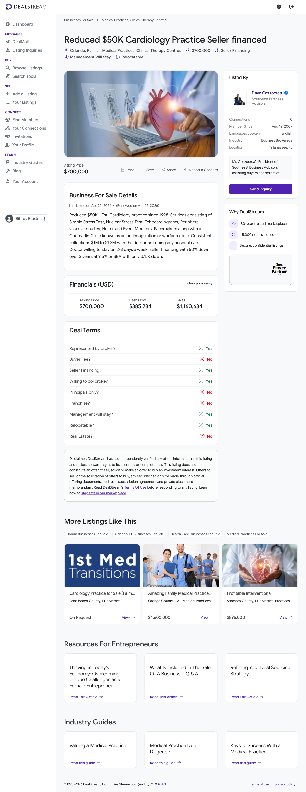

Established Cardiology Practice (Orlando, FL) — Prospect Evaluation
Prepared for Biffrey Braxton / EarnedOut ·
2026-05-21 ·
Lead source: DealStream listing jm9ntb
Buy Box: FAIL
31
Lead Score / 100
Buy Box Screening
#
Criterion
Status
Evidence
1
≥ 10 full-time employees
FAIL
Single-physician practice; support staff est. 5–8 FTE. No headcount disclosed; nothing supports ≥10.
2
EBITDA ≥ $1M / year
FAIL
Listed "cash flow" $385,234 is SDE (includes owner-physician comp). True EBITDA after a market cardiologist wage (~$400K+) is near zero. Far below the $1M floor.
3
10+ years in business
PASS
Established 1998 — ~28 years; corroborated by web search ("serving Orange County since 1998").
4
3+ yrs YoY revenue & profit growth
INSUFFICIENT
No per-year split disclosed. "Consistent collections $1.0M–$1.2M" implies flat, not growing.
5
Asking price ≤ 4.0x EBITDA
INSUFFICIENT
$700K / $385,234 SDE = 1.82x SDE (cheap on SDE). But on a true-EBITDA basis (~$0) the multiple is undefined. Real estate is NOT in the $700K.
6
DSCR > 1.4 (informational)
INSUFFICIENT
Cash available for debt service after a replacement physician's salary is ~zero. Seller financing (50% down/3yr/9.5%) or SBA ($75K down) offered.
Overall Buy Box: FAIL (1 PASS / 2 FAIL / 3 Insufficient). Deal-killers: sub-scale single-physician practice; the $385K "cash flow" is the owner's labor income, not transferable EBITDA; and the listing restricts buyers to physicians/physician groups, structurally excluding EarnedOut as a non-physician financial buyer.
Scorecard (26 fields)
#
Field
Value
Source
1
Business Name
Established Cardiology Practice — legal name withheld by broker
DealStream / BizBuySell
2
Lead Source
DealStream published-listing search — ID jm9ntb
Pipeline
3
Years in business
1998 (~28 years)
Listing; web search
4
Real estate owned
Seller owns the building; NOT in the $700K ask — separate purchase or lease. Value not disclosed.
not disclosed — "consistent collections $1.0M–$1.2M"
Listing
14
Net / FCF 2022
not disclosed
—
15
Net / FCF 2023
not disclosed
—
16
Net / FCF 2024
$385,234 — labeled "cash flow"; this is SDE (incl. owner-physician comp)
Listing
17
Net / FCF 2025
not disclosed
—
18
Asking price
$700,000 (practice only; real estate separate). Title notes prior $50K reduction.
Listing
19
% revenue growth YoY
Not computable — one year disclosed; "consistent" implies flat
computed
20
Yearly revenue retention
not disclosed
—
21
EBITDA margin
~33% on an SDE basis; ~0% true EBITDA after a market physician wage
computed
22
Customer LTV
not disclosed
—
23
Customer CAC
not disclosed
—
24
Client concentration
Not disclosed; functionally ~100% dependent on one physician (key-person risk)
—
25
2024 financials + YTD link
Not provided — broker requires NDA + physician-buyer qualification
—
26
Lead Score
31 / 100
computed
Score Breakdown
Item
Awarded
Max
Justification
Industry match
20
20
Cardiology — squarely in the Cardiac/Medical target industry.
EBITDA tier
0
15
"Cash flow" $385,234 is SDE incl. owner comp; true EBITDA ~$0 after a market cardiologist wage. ≤$1M tier → 0.
Years in business ≥10
10
10
Established 1998 (~28 years).
3 yrs consistent growth
0
10
Insufficient data; "consistent collections" signals flat, not growth.
Recurring revenue
5
10
Mixed — fee-for-service with a repeat patient panel; no contracted/subscription revenue.
Customer concentration <20%
0
5
Not disclosed; functionally ~100% reliant on one physician. Not awarded.
Employees ≥10
0
10
Single-physician practice; est. 5–8 FTE — below 10.
Valuation multiple
0
15
1.82x on SDE, but EarnedOut scores on EBITDA; true EBITDA ~$0 → multiple undefined → >5.5x band → 0.
Low owner dependence
0
5
Owner-cardiologist is the business. Maximum owner dependence.
Roll-up / add-on strategic fit (BONUS)
0
10
N/A — standalone target; not a translation/interpretation or commercial-waste add-on.
Total
31
100
Band: <50 — Pass.
1. Executive Summary
Company overview: Single-physician cardiology practice in the Orlando, FL metro, operating since 1998 (~28 years). Services: simple & nuclear stress testing, echocardiograms, peripheral vascular studies, Holter/event monitoring, pacemaker management, and an anticoagulation (Coumadin) clinic. No hospital calls.
Financial highlights: Sales ~$1,160,634; "consistent collections" $1.0M–$1.2M. Listed "cash flow" $385,234 is SDE (includes owner-physician comp), not institutional EBITDA. Asking $700,000 for the practice only; the building is owned by the seller and offered separately.
Buy Box summary: FAIL — only 1 of 6 hard checks passes (years in business). EBITDA and employee checks fail; growth, valuation, and DSCR unverifiable.
Why not pursue: The "cash flow" is owner labor, not transferable enterprise earnings — true EBITDA is near zero, failing the $1M floor. Sub-scale single-provider practice fails the ≥10-FTE and low-owner-dependence tests. And the listing restricts buyers to physicians/physician groups, structurally excluding EarnedOut.
2. Company Overview
Background & history: Cardiology practice founded in 1998, serving Orange County / Central Florida for ~28 years. Web research corroborates a long-tenured Orlando-area cardiology practice "serving Orange County since 1998." The legal name is withheld — standard for a confidential medical-practice listing.
Ownership: Owner-operated by the practicing cardiologist (likely a FL professional association or PLLC; entity type not disclosed). Single principal.
Milestones: 1998 — established. 2024-04-22 — listed for sale via Southeast Business Advisors. Pre-2026 — asking price reduced $50K (a pre-existing reduction, not a fresh price-drop event). 2026-04-22 — listing renewed; still active.
Org structure: Flat — one physician plus a small clinical/administrative staff. "Management will stay," but in a single-physician practice that is front-office and clinical support; there is no physician-independent general manager running clinical operations.
3. Principals & Leadership
Owner — Cardiologist (name withheld)
Sole practicing physician; performs all cardiology services and drives essentially all revenue; manages the practice day-to-day. Practicing since at least 1998 (28+ years). Credentials not disclosed pre-NDA — verifiable via the CMS NPI registry (NPPES) and the Florida Board of Medicine license lookup once the practice identity is released. The seller offers to stay on 2–3 days/week post-close — a transition aid, and also a direct signal that the practice cannot operate without a credentialed cardiologist.
Services: Outpatient cardiology — Simple Stress Test, Nuclear Stress Test, Echocardiograms, Peripheral Vascular studies, Holter and Event Monitors, Pacemaker interrogation/management, and a Coumadin (warfarin/anticoagulation) clinic. The practice takes no hospital calls — a pure ambulatory/office-based model.
Pricing model: Fee-for-service medical billing — reimbursement from Medicare, Medicaid, and commercial payers (CPT-coded diagnostic and E/M services). No retainer/subscription revenue. The Coumadin clinic and device-monitoring lines generate repeat encounters from a stable patient panel.
Differentiators: 28-year community tenure and an installed in-office diagnostic suite (nuclear stress, echo, vascular, monitoring). The owned building is a real-asset advantage but is not part of the $700K business price.
5. Market Analysis
Industry size & trends: US cardiology is a large, growing specialty driven by an aging population; PE has been active in cardiology roll-ups (~79 PE physician-practice deals in Q1 2025, cardiology among the top targets). But operating-cost pressure is intensifying — medical-practice operating expenses rose ~11.1% in 2025 while reimbursement rates decline.
Drivers & barriers: Drivers — aging demographics, outpatient diagnostics demand, anticoagulation management. Barriers — Medicare fee-schedule cuts to cardiology/imaging, prior-auth friction, rising labor costs, and difficulty recruiting cardiologists to small independents.
Add-on / tuck-in cardiology — 8–12x EBITDA when joining a platform.
Small / single-physician practices — 4.0x–8.0x EBITDA, but those EBITDA figures are after a market physician salary; this listing's "cash flow" has not had that deducted. FOCUS/SovDoc cite "owner-reliant revenue" as an explicit discount factor.
6. Customers & Revenue Model
Customer segments: Individual patients in the Orlando/Central Florida market — predominantly Medicare-age cardiac patients. Revenue is third-party-payer reimbursement, not direct B2B contracts.
Retention: Not disclosed. The Coumadin clinic and chronic device-monitoring lines imply a recurring patient panel with high natural retention, but no metric is provided.
Recurring vs one-time: No contracted/subscription recurring revenue; functionally "repeat-but-not-contracted." Scored 5/10 (mixed).
Concentration: No payer/customer concentration disclosed. The material concentration is on the provider side — ~100% of revenue depends on one cardiologist (a key-person risk, not a customer-concentration figure).
7. Financial Analysis
Year
Revenue
EBITDA
Margin
YoY
2022
Not disclosed
Not disclosed
—
—
2023
Not disclosed
Not disclosed
—
—
2024
~$1,160,634
$385,234 (SDE, not EBITDA)
~33% SDE / ~0% true
—
2025 (annualized)
"$1.0M–$1.2M consistent"
Not disclosed
—
~flat
Revenue trajectory
No multi-year revenue series was disclosed. "Consistent collections of $1.0M–$1.2M" describes a stable, flat profile — not the 3 consecutive years of revenue and profit growth the Buy Box requires.
Estimated valuation
Implied multiple at ask: 1.82x on SDE ($700K / $385,234) — superficially cheap, typical for an owner-operator medical practice priced on SDE. On a true-EBITDA basis the multiple is undefined: after a market cardiologist salary (~$400K+, MGMA range), institutional EBITDA is ~$0 or negative. EarnedOut scores on EBITDA, so the valuation line earns 0 pts. This is not an LBO-grade asset.
8. SWOT Analysis
Strengths
28-year community tenure and established patient base.
In-office diagnostic suite (nuclear stress, echo, vascular, monitoring).
Seller owns the building — purchase-or-lease optionality.
Seller financing and an SBA path both available; seller will transition.
Weaknesses
Single-physician — owner is the business; ~100% key-person dependence.
Financial: The $385,234 "cash flow" is SDE bundling the owner-physician's compensation. After a market replacement-physician salary, EBITDA is near zero — not a positive-EBITDA enterprise on a financial-buyer basis. No multi-year financials disclosed.
Operational: Maximum key-person dependency — one cardiologist drives essentially all revenue and clinical capacity. The 2–3 day/week stay-on offer is a transition aid, not a permanent fix. No physician-independent management layer.
Regulatory / legal: Requires FL Board of Medicine licensure, DEA registration, nuclear-materials licensing for the nuclear stress lab (FL Bureau of Radiation Control / NRC agreement-state rules), CLIA, and Medicare/Medicaid enrollment. Change of ownership triggers payer re-credentialing. Buyer must be a physician or physician group.
Deal conditions: Structurally not actionable for EarnedOut — (1) buyer-must-be-a-physician restriction excludes a non-physician acquirer; (2) EBITDA fails the $1M floor; (3) the $700K does not even include the building.
10. Outlook & Growth Opportunities
Expansion potential: Real upside exists for a physician buyer — recruiting one or two associate cardiologists or advanced-practice providers would multiply capacity, de-risk the single-provider model, and create the multi-physician scale that earns 8–12x platform/tuck-in multiples.
Operational upside: Modernize billing/coding, expand remote cardiac monitoring, grow the anticoagulation clinic — none reachable by EarnedOut given the buyer restriction.
Strategic fit: Best fit is a tuck-in for an existing Central Florida cardiology platform or a physician-owned group — not a standalone financial acquisition.
Disposition: PASSED. Sub-scale single-physician medical practice; "cash flow" is owner labor, not enterprise EBITDA; fails the EBITDA and employee Buy Box checks; and the listing restricts buyers to physicians/physician groups. Not a candidate for the active pipeline or for roll-up.
11. Appendix
Listing screenshot

DealStream listing jm9ntb — captured 2026-05-21.
A. Data sources
DealStream listing jm9ntb — primary listing; returned HTTP 403 to automated fetch; facts from provided lead data + search snippets + screenshot on file.
BizBuySell #2231165 — cross-listing of the same practice; search snippets disclosed seller financing terms (50% down/3yr/9.5%), SBA ~$75K down, seller owns the building, doctor stays 2–3 days/week, collections $1.0M–$1.2M.
WebSearch (cardiology practice for sale Orlando, Southeast Business Advisors) — corroborated "serving Orange County since 1998" and "buyer must be a doctor or with a group."
FOCUS — Cardiology Practice Valuation — single-physician benchmarks: <$500K EBITDA → 4.0x–6.0x; $500K–$1M → 6.0x–8.0x; "owner-reliant revenue is a discount factor."
The "cash flow" of $385,234 is treated as SDE, not EBITDA — business-for-sale listings report owner-benefit "cash flow" inclusive of the working owner's compensation. The owner here is a working cardiologist, so a market physician salary (MGMA general-cardiology ~$400K–$500K+) must be deducted to reach institutional EBITDA → ~$0 or negative.
Employee estimate of 5–8 FTE — typical staffing for a single-physician outpatient cardiology practice with an in-office nuclear/echo lab.
FF&E estimate of $150K–$400K — based on the disclosed equipment set (nuclear stress camera, echo, Holter/event monitoring, vascular studies).
C. Estimation calculations
Field #5 — Value of FF&E — Estimated at $150K–$400K.
Method: nuclear stress lab + echocardiography + monitoring hardware typically falls in this band; treadmill/EKG and office FF&E are minor. No equipment schedule disclosed.
Sources: Listing service list (DealStream jm9ntb); medical-equipment market knowledge.
Field #6 — Full-time employees — Estimated at 5–8.
Method: single-physician outpatient cardiology with an in-office imaging suite typically runs ~1 front desk + 1–2 MAs + 1 imaging/nuclear tech + 1 biller/office manager.
Sources: staffing benchmark for single-physician specialty practices; listing-disclosed services.